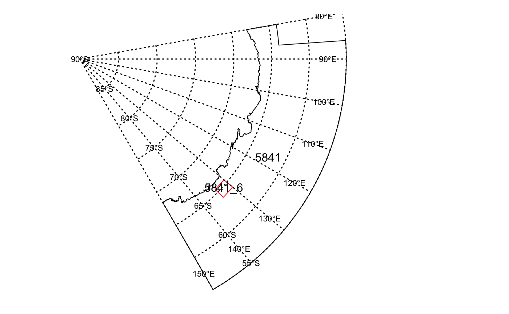
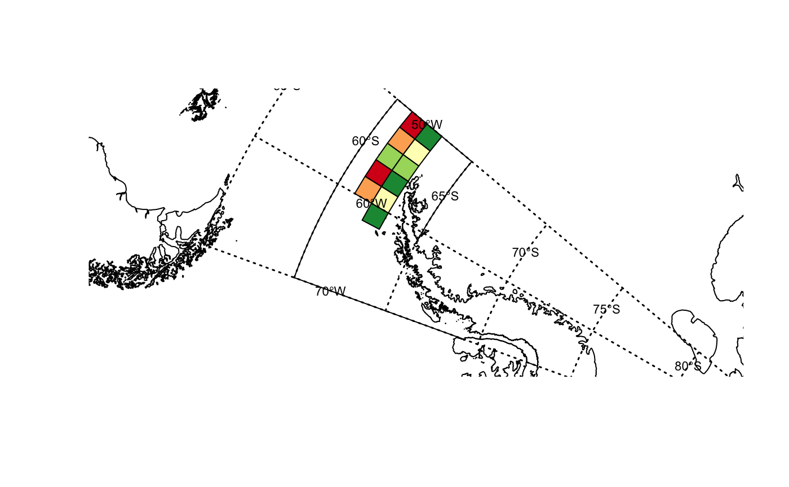
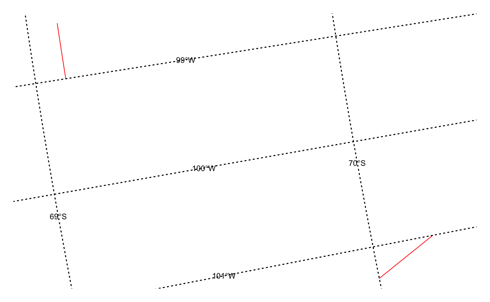
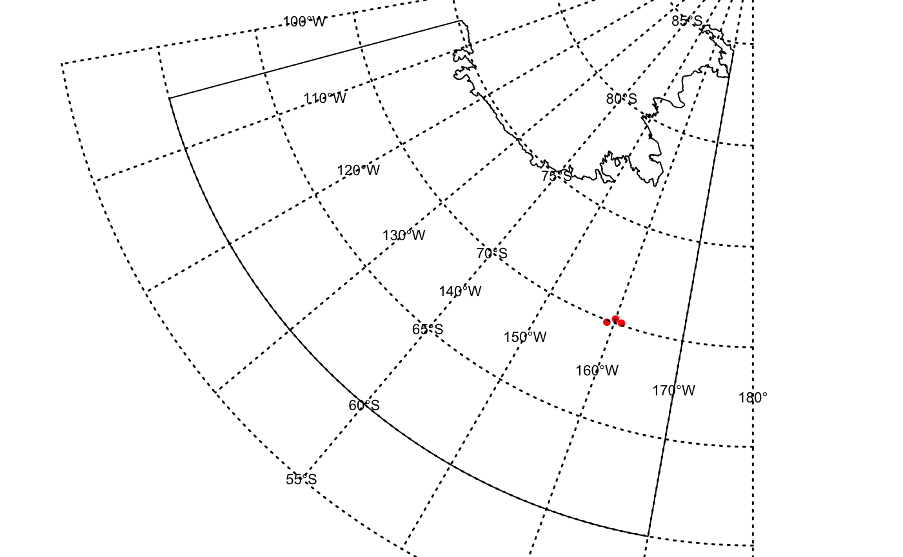

CCAMLRGIS_R.RmdThis vignette describes the R package “CCAMLRGIS”. The CCAMLRGIS package was developed to create new georeferenced data in the CCAMLR Convention Area for visualisation (i.e. mapping) and/or analyses and for reading existing georeferenced data that is displayed on the CCAMLR online GIS (https://gis.ccamlr.org/) directly from the webpoint end service into R. The package has a number of create functions for creating polygons, polygon grids, lines or points and a series of load functions for reading existing georeferenced data that has been agreed by the Commission and is documented in CCAMLR’s Conservation Measures or in Scientific Committee reports.
The main purpose of this package is to: (1) facilitate the use of CCAMLR’s spatial data by members and the wider scientific R user community and; (2) To ensure the spatial data presented at CCAMLR’s Working Group meetings and the Scientific committee conforms with standard projection currently adopted by CCAMLR i.e. the South Pole Lambert Azimuthal Equal Area projection. Defined as EPSG 102020 or more specifically: +proj=laea +lat_0=-90 +lon_0=0 +x_0=0 +y_0=0 +datum=WGS84 +units=m +no_defs +ellps=WGS84 +towgs84=0,0,0
To install the CCAMLRGIS from github you will firstly need to install devtools (i.e. install.packages(“devtools”)) and then use the following command:
devtools::install_github("lucymerobinson/CCAMLRGIS",build_vignettes=TRUE)The create_Polys function has been developed to create polygons that conform to CCAMLR’s standards/specifications that can be used in analyses or to generate maps in R.
See ?create_Polys for function input specifications
library(CCAMLRGIS)
# Create research block polygon
# specify the name of the Research block
Name <-"5841_6"
# specify the Latitude coordinates in decimal degrees
Lats <- c(-64.0, -65.5, -65.5,-64.0)
# specify the Longitude coordinates in decimal degrees
Lons <- c(130, 130, 134, 134)
# bind information together into a dataframe for input into the create_Polys function see ?create_Polys
Coords <- data.frame(Name=rep(Name,length(Lons)),Lats=Lats,Lons=Lons)
# create polygon of proposed Research area to use in further Analyses
New_RB <- create_Polys(Coords)The function automatically calculates a plantimetric area estimate (in km2) based on the geometry of “New_RB”. For details on how this area is calculated see ?create_Polys and to access the estimates:
New_RB$AreaKm2## [1] 31851The SpatialPolygonDataFrame “New_RB”" can be used in further analyses in R (as per the above example) because the default parameter option for OutputFormat=“ROBJECT”. You can also output as an ESRI Shapefile for use in other programs by specifying OutputFormat=“SHAPEFILE” and a name for example: OutputName=“RB_5841_6”
CCAMLR’s reference data include management areas, defined in Conservation Measures and/or Scientific Committee reports (e.g. ASD’s, SSRU’s, etc). The text and/or geographical coordinates that are used to create polygons that define the reference area boundaries are stores in the CCAMLR’s central database in SQL Server Spatial. These data, that are displayed as layers on the online GIS, are also stored in GeoJSON format, in an online geoserver repository, that allows them to be loaded directly into R.
# load ASDs from the online GIS - you will need to be online for this to work see
?load_ASDs
ASDs <- load_ASDs("GEOJSON")# index ASD in the area of interest - e.g. 58.4.1
ASD_5841 <- ASDs[ASDs$GAR_Short_Label%in%"5841",]The plot function from the raster package is used for plotting maps as it will accept all spatial data/Raster objects see ?raster::plot for further details
See ?graticule for function input specifications
# add graticules and store locations of labels
library(graticule)## Loading required package: sp#> Loading required package: sp
# create graticules for plotting below
meridians <- seq(80,150, by = 10)
parallels <- seq(-90, -55, by = 5)
mlim <- c(min(meridians), max(meridians))
plim <- c(min(parallels), max(parallels))
grat <- graticule(lons = meridians, lats = parallels, xlim = mlim, ylim = plim, proj = raster::projection(New_RB))
labs <- graticule_labels(meridians, parallels, xline = 140, yline = -57.5, proj = raster::projection(New_RB))par(mar=c(1,1,1,1))
raster::plot(ASD_5841)
text(sp::coordinates(ASD_5841), labels=as.character(ASD_5841$GAR_Short_Label),cex=1,col="black")
raster::plot(New_RB,add=TRUE,border="red")
text(sp::coordinates(New_RB), labels=as.character(New_RB$name),cex=1,col="black")
# add graticules to plot
raster::plot(grat, add = TRUE, lty = 3,lwd=1.5)
text(labs, lab = parse(text= labs$lab), col= "black", cex = 0.7)
Polygon grids are useful for displaying catch quantities at a resolution that can be specified by the user. The create_PolysGrids function has been developed to create polygon grids to display variation in quantity of target species catch.
See ?create_PolysGrids for function input specifications
# Create example catch data with Longitude and Latitude
# specify the Latitude coordinates in decimal degrees
Lats <- rnorm(1000,mean=-62,sd=0.25)
# specify the Longitude coordinates in decimal degrees
Lons <-sample(seq(-60,-50,0.01),1000,replace=TRUE)
Catch <- sample(100:1000,length(Lons),replace = TRUE)
# bind information together into a dataframe for input into the create_Polys function see ?create_Polys
Catch_data <- data.frame(Lats=Lats,Lons=Lons,Catch=Catch)
# create polygon of proposed Research area to use in further Analyses
New_Grid <- create_PolyGrids(Catch_data,dlon=2,dlat=1)The SpatialPolygonDataFrame “New_Grid”" can be used in further analyses in R (as per the above example) because the default parameter option for OutputFormat=“ROBJECT”. You can also output as an ESRI Shapefile for use in other programs by specifying OutputFormat=“SHAPEFILE” and a file name. For example OutputName=“Catch_Grid”
The function automatically summarises the numerical data included in each polygon grids . For details on summary output see ?create_PolyGrids. The summary information appears as follows. Note this only includes data on the first six polygon grids
head(New_Grid@data)## name Count Max Min Mean StdDev Median Sum
## 1 Catch 1 488 488 488.00 NA 488.0 488
## 2 Catch 99 993 115 542.00 267.24 545.0 53658
## 3 Catch 88 961 106 516.95 249.67 528.0 45492
## 4 Catch 94 996 101 547.47 258.23 527.5 51462
## 5 Catch 103 990 105 506.94 253.61 475.0 52215
## 6 Catch 92 991 100 530.30 281.07 528.5 48788The ClassInt package will find appropriate intervals for plotting
The RColorBrewer package provides a variety of color ramps for plotting
# install.packages(c("classInt","RColorBrewer"))
library(classInt)## Loading required package: spData## To access larger datasets in this package, install the spDataLarge
## package with: `install.packages('spDataLarge',
## repos='https://nowosad.github.io/drat/', type='source'))`library(RColorBrewer)# specify lables for graticules
meridians <- seq(-70,-50, by = 10)
parallels <- seq(-90, -55, by = 5)
mlim <- c(min(meridians), max(meridians))
plim <- c(min(parallels), max(parallels))
grat <- graticule(lons = meridians, lats = parallels, xlim = mlim, ylim = plim, proj = raster::projection(New_Grid))
labs <- graticule_labels(meridians, parallels, xline = -55, yline = -62, proj = raster::projection(New_Grid))
#specify colour ramp
cols <- brewer.pal(n = 5, name = "RdYlGn")
breaks<-classIntervals(New_Grid$Sum,5)
# add a very small value to the top breakpoint, and subtract from the bottom for symmetry
br <- breaks$brks
offs <- 0.0000001
br[1] <- br[1] - offs
br[length(br)] <- br[length(br)] + offs
plot(ASDs[ASDs$GAR_Short_Label%in%"481",])
# add Coastline data
plot(Coastline_data,add=TRUE)
plot(New_Grid, col=rev(cols)[cut(New_Grid$Sum, br)],add=TRUE)
# add graticules to plot
raster::plot(grat, add = TRUE, lty = 3,lwd=1.5)
text(labs, lab = parse(text= labs$lab), col= "black", cex = 0.7)
It can be useful to useful to create spatial line data to represent/analyse a variety of data such as longline sets, vessel tracks or animal tracks. The create_Lines function has been developed to create spatial lines that conform to CCAMLR’s standards/specifications that can be used in analyses or to generate maps in R.
see ?create_Lines for function specifications
## specify the name of the lines
Name <- c(rep("Set_1",2),rep("Set_2",2))
## specify the Longitude coordinates in decimal degrees
Lon <- c(-99,-98.5,-101,-101.3)
## specify the Latitude coordinates in decimal degrees
Lat<- c(-69.1,-69.1,-70.2,-70)
## bind information together into a dataframe
Coords<- data.frame(Name=Name,Lat=Lat,Lon=Lon)
## create polygon of proposed Research area
New_Lines <- create_Lines(Coords)The SpatialLineDataFrame “New_Lines” can be used in further analyses in R (as per the above example) because the default parameter option for OutputFormat=“ROBJECT”. You can also output as an ESRI Shapefile for use in other programs by specifying OutputFormat=“SHAPEFILE” and and output name for example: OutputName=“Longlines_Subarea883”
The create_Lines function also calculates the length of the line that you create in kilometers and nautical miles. This can be accessed using
# to access line length in km
New_Lines$LengthKm## [1] 20.25 24.84# to access line length in NM
New_Lines$LengthNm## [1] 10.93 13.41# create graticules for plotting below
meridians <- seq(-105,-95, by = 1)
parallels <- seq(-90, -55, by = 1)
mlim <- c(min(meridians), max(meridians))
plim <- c(min(parallels), max(parallels))
grat <- graticule(lons = meridians, lats = parallels, xlim = mlim, ylim = plim, proj = raster::projection(New_Lines))
labs <- graticule_labels(meridians, parallels, xline = -100.2, yline = -69.5, proj = raster::projection(New_Lines))
par(mar=c(1,1,1,1))
raster::plot(New_Lines,col="red")
# add graticules to plot
raster::plot(grat, add = TRUE, lty = 3,lwd=1.5)
text(labs, lab = parse(text= labs$lab), col= "black", cex = 0.7)
It can be useful to useful to create spatial point data to represent survey sites, fishing locations and VME locations. The create_Points function has been developed to create spatial points that can be used in analyses or to generate maps in R.
see ?create_Lines for function specifications
# specify the name of the points
Name <- c("Point_1","Point_2","Point_3")
# specify the Latitude coordinates in decimal degrees
Lat<- c(-70.2,-70.1,-69.9)
# specify the Longitude coordinates in decimal degrees
Lon <- c(-160,-161,-159)
# bind information together into a dataframe
Coords<- data.frame(Name=Name,Lat=Lat,Lon=Lon)
# create points
New_Points <- create_Points(Coords)# create graticules for plotting below
meridians <- seq(-180,-100, by = 10)
parallels <- seq(-90, -55, by = 5)
mlim <- c(min(meridians), max(meridians))
plim <- c(min(parallels), max(parallels))
grat <- graticule(lons = meridians, lats = parallels, xlim = mlim, ylim = plim, proj = raster::projection(New_Points))
labs <- graticule_labels(meridians, parallels, xline = -140, yline = -67.5, proj = raster::projection(New_Points))
# set plotting margins to zero on all sides
par(mar=c(0,0,0,0))
# select Subarea 88.2 from ASDs polygon data
raster::plot(ASDs[ASDs$GAR_Short_Label%in%"882",])
# add points to the plot
raster::plot(New_Points,col="red",add=TRUE,pch=20)
# add graticules to plot
raster::plot(grat, add = TRUE, lty = 3,lwd=1.5)
text(labs, lab = parse(text= labs$lab), col= "black", cex = 0.7)
Calculating seabed area within particular depth ranges can be useful in a CCAMLR context for designing depth stratified surveys for estimating local toothfish biomass. The seabed_area function has been developed to provide seabed_area estimates within what is commonly classified as a fishable seabed depth range of 600-1800m.
To see input requirements see ?seabed_area
Bathymetry data is necessary to calculate planimetric seabed area restricted by depth range(s). A processed version of the General Bathymetric Chart of the Oceans (GEBCO) 2014 data, that has been restricted to a Research Block in Subarea 48.2 (482_S) within a fishable depth range (600-1800m), has been included for the examples below, but the full dataset (across the Convention Area) can be requested from the CCAMLR Secretariat.
bathymetry_data_fn <- system.file("extdata","GEBCO_2014_600_1800m_482_S.grd",package = "CCAMLRGIS")
bathymetry_data <- raster::raster(bathymetry_data_fn)Load Research Block data and restrict the attribute data stored in the SpatialPolygonDataFrame to “GAR_Short_Label”
# load Research Blocks from the online GIS - you will need to be online for this to work see
RBs <- load_RBs("GEOJSON")# select data column names in GAR_Short_Label
RBs <- RBs[,names(RBs)%in%"GAR_Short_Label"]Select a Research Block of interest. For example, the Research Block in Subarea 48.2 - 482_S
RB_482_S <- RBs[RBs$GAR_Short_Label%in%"482_S",]Estimate fishable seabed area in Research Block 482_S
seabed_area_482_S <- seabed_area(bathymetry = bathymetry_data,Polys = RB_482_S,fishable_area = TRUE)The output from the function is two column dataframe. The first column, under the column name “Polys” contains the label or name of the polygon(s) included in the SpatialPolygonDataFrame input into the seabed_area function. The second column, under the column name “Fishable area”, is the estimated planimetric seabed area (km2) in the fishable depth range.
seabed_area_482_S## Polys Fishable_area
## 1 482_S 2268.75Specify depth classes, within the fishable seabed area depth range, at 300m depth intervals in Research Block 482_S
depth_classes <- c("600-900","900-1200","1200-1500","1500-1800")Estimate seabed area within depth classes
seabed_area_by_depth_classes <- seabed_area(bathymetry_data,RB_482_S,fishable_area=FALSE,depth_classes = depth_classes)The output from the function is dataframe. The first column, under the column name “Polys” contains the label or name of the polygon(s) included in the SpatialPolygonDataFrame input into the seabed_area function. The second column, under the column name “Total area”,is the estimated planimetric seabed area (km2) across all depth classes and each subsequent column after the “Total area” is named after the depth classes included. In this example the “Total area” should be equal to the “Fishable area” given the example bathymetry data provided in the R package is already restricted to the 600-1800 m depth range.
seabed_area_by_depth_classes## Polys Total_area 600-900 900-1200 1200-1500 1500-1800
## 1 482_S 2268.75 188.25 300.75 479.25 1300.5